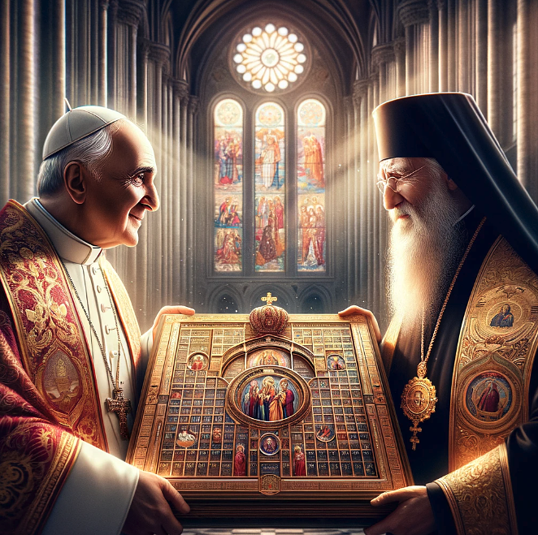

1700th Anniversary of the Council of Nicaea in 2025
35 page views
|
424 words
|
This article caught my attention: Orthodoxy’s Divisions Offer Glimmers of Hope for Healing With Catholicism because it talked about the response of the Roman Catholic and Eastern Orthodox churches to Russia's 2022 Invasion of Ukraine. Specifically, it talks about how the invasion led to a split in Eastern Orthodoxy between Russian and non-Russian. The non-Russian side is represented by Patriarch of Constantinople Bartholomew I, and the Russian side is represented by Patriarch Kirill.
Patriarch Bartholomew I of Constantinople (left) with Pope Francis of Rome (right)
Meanwhile, in Russia...
Patriarch Kirill of Moscow
What changed after the invasion and the split was a removal of "the principal obstacle to greater Catholic-Orthodox rapprochement":
The historic marginalization of Russian Orthodoxy removes the principal obstacle to greater Catholic-Orthodox rapprochement. Because Moscow is the populous center of Orthodoxy, it is fair to view Catholic-Orthodox relations as a whole through that relationship. Yet that perspective gives a false reading.
also:
The ecumenical upshot was that if reconciliation with Orthodoxy had to go through Moscow, then reconciliation would not proceed. And due to the sheer size of Russian Orthodoxy, the other Orthodox patriarchs were reluctant to move significantly on their own.
That is no longer true.
What does this mean in practice? The article mentioned that Patriarch Bartholomew hinted at a possible joint date for Easter in 2025, just in time for the 1700th anniversary of the First Council of Nicaea (325 AD). Orthodox Easter and Catholic Easter are a week apart, so this is a big synchronization of the Western and Eastern liturgical calendars. The symbolism of unifying the celebration of Easter between the West and the East on the 1700th anniversary of this foundational council is pretty awesome.

Fictionalized: The Pope (left) and Ecumenical Patriarch of Constantinople (right) holding a shared liturgical calendar. Generated by OpenAI DALL-E 3
While the marginalization of Russian Orthodox believers is regrettable, the patience of the church keeps the door open for a future re-unification in a post-Putin world.